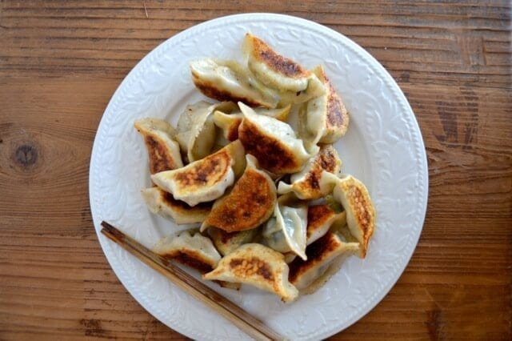

Dumplings

Description
We’ve been making this dumpling recipe for a long time. A LONG time. I remember sitting on a stool in my grandmother’s kitchen on 161st Street in Queens, learning to fold these…my seven-year-old fingers clumsily stumbling over everything…getting the wrappers way too wet, putting in too much filling, and crossing my fingers by the stove in a futile attempt to keep them from opening up while they cooked.
Ingredients
- 3 lbs green leafy vegetable
- 1 ½ pounds ground pork
- 2/3 cup shaoxing wine
- ½ cup oil
- 3 tablespoons sesame oil
- 3 tablespoons soy sauce
- ¼ teaspoon white pepper
- 2/3 cup water
- 3 packages dumpling wrappers
Steps
- Wash your vegetables thoroughly and blanch them in a pot of boiling water. Transfer them to an ice bath to cool. Ring out all the water from the vegetables and chop very finely.
- In a large bowl, stir together the vegetable, meat, wine, oil, sesame oil, salt, soy sauce, white pepper, and 2/3 cup water. Mix for 6-8 minutes, until very well-combined.
- To wrap the dumplings, dampen the edges of each circle with some water. Put a little less than a tablespoon of filling in the middle. Fold the circle in half and pinch the wrapper together
at the top. Then make two folds on each side, until the dumpling looks like a fan. Make sure it’s completely sealed. Repeat until all the filling is gone, placing the dumplings on a baking
sheet lined with parchment. Make sure the dumplings aren’t sticking together.
- If you’d like to freeze them, wrap the baking sheets tightly with plastic wrap and put the pans in the freezer. Allow them to freeze overnight. You can then take the sheets out of the freezer,
transfer the dumplings to Ziploc bags, and throw them back in the freezer for use later.
- To cook the dumplings, boil them or pan-fry them. To boil, simple bring a large pot of water to a boil, drop the dumplings in, and cook until they float to the top and the skins are cooked
through, but still slightly al dente.